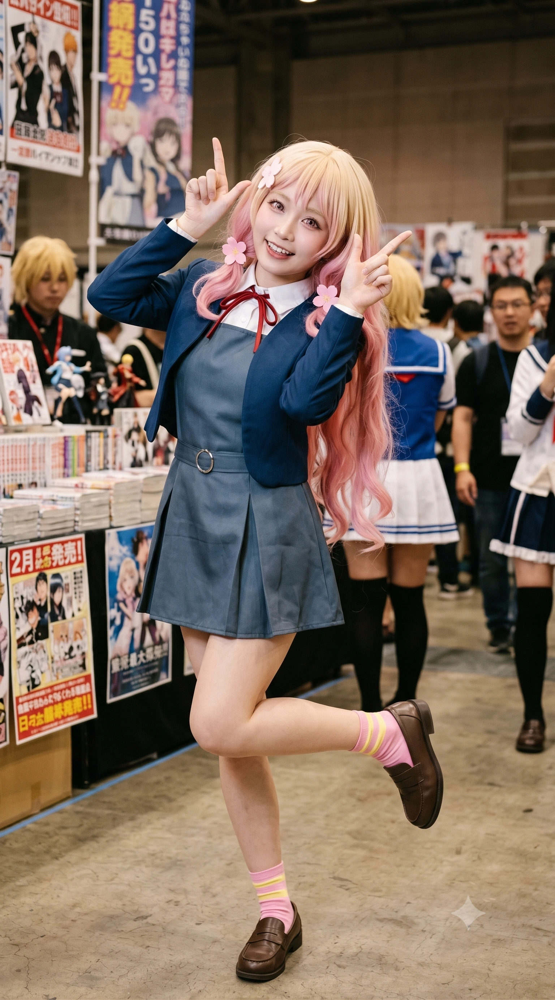

톡톡 튀는 분홍색 투톤 헤어스타일에 돈과 구독자를 지독하게 밝히는 성격, 말끝마다 붙이는 특유의 어미 "데스노(입니다만)!"까지 오니츠카 나츠미 그 자체의 삶을 살고 있다. 고등학교 시절 웬수지간이었던 임은혜와는 현재 같은 대학 학과 동기이자 끈끈한(?) 비즈니스 파트너로 활약하며 효빈시 서브컬처 인방계의 조회수를 쌍끌이하고 있다.
2. 생애 및 학창 시절
2.1. 하미면 하미리 출신 (feat. 동구초등학교)
2006년 7월 8일, 서브컬처 팬들 사이에서 일명 '돈 냄새를 잘 맡는 면사무소'라 불리며 오니츠카 나츠미의 밈이 흘러넘치는 덕빈북도 선곡군 하미면 하미리에서 태어났다.
이후 1살이 되던 해, 가족이 바로 옆 동네인 동구면 동구리(동생 오마리의 모티브 지역)로 이사를 갔고, 낙희는 그곳에서 동구초등학교를 다니며 왈가닥 엘튜버 꿈나무로 성장했다.
2.2. 당가동 이사와 다시 하미면으로: 전설의 광역버스 통학러
중학교 진학 무렵, 낙희의 방송 인프라와 자매의 교육을 위해 가족은 효빈광역시의 서브컬처 중심지인 안천구 당가동으로 이사를 감행한다. 낙희는 당가중학교를 졸업하고 당가고등학교에 진학했다.
그런데 낙희가 고등학교 2학년이 되던 해, 가족의 사정으로 인해 다시 원래 살던 선곡군 하미면 하미리로 이사를 가게 되었다. 평범한 학생이라면 당가고를 자퇴하고 전학을 갔겠지만, 낙희는 "구독자들이 내 당가고 교복을 좋아한다 데스노!"라는 기적의 논리로 전학을 거부했다.
결국 낙희는 매일 아침 왕복 2시간이 넘는 거리를 광역버스를 타고 효빈 시내의 당가고등학교로 통학하는 기염을 토했다. 이는 애니메이션에서 이바라키현에 사는 오니츠카 자매가 도쿄 하라주쿠의 유이가오카로 장거리 통학을 하는 설정과 소름 돋을 정도로 완벽하게 똑같은 고증이 되어버렸다.
2.3. 해천대학교 진학: "은혜보다 내가 5등 위다 데스노!"
방송에만 매진하느라 학업을 완전히 던져버린 낙희의 고등학교 내신은 처참했다. 결국 그녀가 선택한 곳은 성적 맞춰서 가는 C등급 대학이자 유튜버 양성 과정이 있는 해천대학교 미디어영상콘텐츠학과였다.
당가고 동급생이었던 임은혜 역시 공부를 지지리도 못해 같은 대학, 같은 학과에 원서를 넣었는데, 낙희는 "내가 은혜 쨩보다 전교 석차에서 무려 5등이나 앞섰다 데스노! 내가 선배나 다름없다!"라며 밑바닥(?) 성적 배틀에서 승리한 것을 아직도 자랑스러워한다.
3. 오니츠카 나츠미와의 평행이론
3.1. 외모, 성격, 그리고 "데스노!"
외모부터가 오니츠카 나츠미 본인이다. 금발 베이스에 끝부분이 핑크빛으로 물든 풍성한 투톤 헤어스타일, 작은 체구(155cm)에 본인 주장 81-60-83의 은근히 글래머러스한 볼륨감, 그리고 묘하게 하라구로의 기운이 풍기는 표정까지 판박이다.
학창 시절부터 스스로를 '엘튜버'라 칭하며 학교 복도에서 V로그를 찍어댔고, 돈과 구독자를 모으기 위해서라면 물불을 가리지 않는 자본주의의 화신이다. 심지어 말끝마다 출처 불명의 어미 "~데스노!"를 붙이는 컨셉까지 완벽하게 소화하고 있다.
3.2. 기막힌 생일 기믹 (7월 8일)
오니츠카 나츠미의 생일은 8월 7일인데, 오낙희의 생일은 정확히 그 월과 일을 반대로 뒤집은 2006년 7월 8일이다. 동생 오마리(토마리 생일 1228의 하루 전 1227)와 함께 이 자매의 생일은 우주가 점지해 준 기믹이라는 것이 효빈시 서브컬처계의 정설이다.
4. 작중 주요 행적 및 사건 일지
자본주의의 화신인 오낙희의 행적은 철저히 돈, 조회수, 그리고 비즈니스로 얽혀있다. 특히 임은혜와의 동업, 그리고 동생 마리를 짝사랑하는 호구 연하남 임승민의 지갑을 터는 과정은 그녀 서사의 백미다.
4.1. 임은혜와의 비즈니스 파트너 (수익 배분 갈등)
고등학교 시절 웬수였으나 현재는 영혼의 동업자가 된 임은혜와는 항상 수익 배분을 두고 피 튀기는 설전을 벌인다. 어느 날 펜트하우스 거실, 유튜브 쇼츠 썸네일 지분 및 광고 단가 수익 배분(6대 4)을 두고 고래고래 소리를 지르며 다투던 중, 방문을 열고 나온 승민이 동생 오마리를 보고 뇌 정지가 온 '입덕 모먼트'를 포착했다.
"은혜 쨩! 이번 유튜브 쇼츠 썸네일은 내 지분이 60%니까 광고 단가도 6대 4로 칼같이 찢어야 한다 데스노! 자본주의의 섭리를 거스르면 천벌 받는다 데스노!!"
(승민이 마리를 보고 굳어버리자)
"데스노?! 쟤 왜 저러냐 데스노? 저 녀석 혹시 우리 마리 쨩 얼굴 보고 영혼 나간 거냐 데스노?!"
"크큭... 은혜 쨩의 복수극 영상, 쇼츠로 올리면 조회수 100만 각이다 데스노! 임승민, 네 흑역사 영상 삭제권을 원한다면 현찰 50만 원을 입금해라 데스노!"
옆에서 팝콘 뜯는 표정으로 계산기를 두드리며, 승민을 놀려 흑역사 삭제권으로 50만 원을 요구하는 압도적인 상술을 보여주었다.
4.2. 자본주의 화신의 강림 (임승민 지갑 털기 프로젝트)
승민의 맹목적인 짝사랑은 낙희에게 완벽한 돈벌이 수단이었다. 펜트하우스 거실 소파, 낙희는 마리의 과거 데이터(강의 시간표, 체육대회 직캠)를 5만 원에 팔려고 살금살금 승민에게 접근했다.
"어이, 거기 뚝딱거리는 안천과고 브레인 쨩~? 우리 마리 쨩이 그렇게 좋냐 데스노? 내가 언니 된 도리로서 특별히! 마리 쨩의 이번 학기 동구대학교 경영학과 강의 시간표 동선 분석표랑, 당가고 시절 체육대회 희귀 직캠 원본 파일 풀세트를 넘겨주겠다 데스노! 내 계좌로 깔끔하게 현금 5만 원만 쏴라 데스노!"
승민의 뇌내 연산 오류를 귀신같이 포착하고 음흉한 썩소를 지은 그녀는, 무려 스마트폰 간이 카드 리더기까지 꺼내어 승민의 체크카드 결제를 유도했다. 그러나 마리에게 현장을 들켜 등짝 스매싱을 찰싹 맞고 거래를 취소당하자 "아아악! 데스노오오옥!! 마리 쨩, 왜 때리냐 데스노?! 이건 수요와 공급의 원리에 입각한 정당한 시장 경제 활동... 내 5만 원 데스노오오!! 5만 원이면 하미면 가는 편도 차비에 캔커피가 몇 잔인데 데스노 ㅠㅠ"라며 카펫을 쥐어뜯으며 오열했다.
낙희의 상술은 멈추지 않았다. 탕후루 팝업스토어를 구실로 마리와 승민을 펜트하우스에 단둘이 남겨두는 악질적인 큰 그림을 실행한 날, 현관 밖 비상계단 방화문 틈새에서 홈캠을 미러링하며 승민을 협박했다.
"단둘이 남겨진 이 프리미엄 프라이빗 공간 대여료의 시장 가치는 시간당 최소 10만 원이다 데스노! 승민 군, 내 토스 계좌로 입금 확인되기 전까진 도어락 비밀번호 안 누를 거다 데스노!!"
(마리가 146 BPM을 찍고 빤스런을 치자)
"푸훕…! 큭큭큭!! 은혜 쨩, 봤냐 데스노?! 146 BPM에 마카롱 챙겨서 빤스런 치는 거 봤냐 데스노?! ㅋㅋㅋ"
e스포츠 스폰서십 계약을 위해 펜트하우스에 재방문했을 때는, 8자리 계약금이 적힌 서류 봉투를 깃발처럼 펄럭이며 신나 있었다. 핑크 프릴 앞치마를 입은 승민에게 "어이, 앞치마 입은 뚝딱이 꼬맹이! 누나가 특별히 3만 원만 토스로 쏘면, 회의하는 45분 동안 마리 쨩 바로 옆자리에 착석할 수 있는 프리미엄 VVIP 방청권을 발권해 주겠다 데스노!"라며 또 장사질을 시도했다. (이에 승민은 "진짜요?! 당장 즉시 이체하겠..."이라며 반응했다.)
승민이 가져온 맹물 커피에 "야! 우리 건 편의점 1,000원짜리 파우치 커피 맛인데 마리 쨩 거는 왜 성수동 에스프레소 바 퀄리티냐 데스노?!"라며 불평하다, 마리가 152 BPM을 찍고 현관문을 부수듯 도망치자 날아간 인감도장을 주워 담으며 "어?! 야, 법인 도장은 찍고 튀어야지 데스노!! 마리 쨩——!! 내 8자리 스폰서 계약금 데스노오오옥!!"이라며 대성통곡했다.
4.3. 148 BPM 직캠과 자매 육탄전
승민이 코시-슈바르츠 부등식으로 마리의 심박수를 148 BPM으로 폭발시킨 날, 낙희는 현관 밖 비상계단에서 망을 보고 있었다. 은혜가 특종 영상을 찍었다는 사실을 알게 되자, 현관문을 긁어대며 "은혜 쨩! 영상 지분 5대 5로 당장 넘겨라 데스노!"라고 절규했다.
이후 은혜에게 8K 60fps 무삭제 원본 영상을 에어드롭으로 전송받은 낙희는, 눈동자에 달러(＄) 기호가 켜진 채 콧김을 뿜으며 게스트룸 문을 부수듯 열고 마리에게 들이닥쳤다.
"데스노오오오옥!! 인생 역전 잭팟이 터졌다 데스노!!"
"크하하하!! 어이, 안천과고 브레인의 벡터 내적에 영혼까지 탈곡당한 선곡군 새우튀김 공주 쨩~?! 우리 피도 눈물도 없는 철혈의 매니저 마리 쨩의 심박수가 148을 찍고 빤스런을 치다니, 이 4분짜리 킬러 콘텐츠의 시장 가치는 최소 현찰 50만 원부터 시작이다 데스노!! 2살 어린 09년생 연하남의 이과식 순애 폭격에 전두엽이 마비돼서 침대 구석으로 도망친 소감이 어떠냐 데스노?!"
"어허, 데스노! 자매간에 민사 소송 거는 변호사 선임 비용이랑 인지대가 더 비싸게 먹힌다 데스노! 이 세기의 명작 직캠을 영구 폐기하고 싶다면, 지금 당장 내 토스 계좌로 '디지털 장의사 특별 수수료' 10만 원을 쏴라 데스노! 1초라도 지체하면 당장 동구대학교 경영학과 에타 자유게시판이랑 우리 유튜브 채널 커뮤니티 탭에 [속보: 팩폭러 오마리, 09년생 과고생 미적분 플러팅에 심장 폭발 직캠 최초 공개] 로 라이브 스트리밍을 걸어버릴 거다 데스노!!"
얄밉게 혀를 낼름거리고 QR코드를 들이밀던 낙희는 결국 이성을 잃은 마리의 날아차기 바디프레스를 맞고 페르시아산 카펫 위를 뒹굴었다. "아악! 데스노?! 마리 쨩 눈깔이 돌았다 데스노!! 살려주... 끄아악!!" 비명을 지르면서도 스마트폰을 뱃살 속에 파묻고 아르마딜로처럼 웅크린 채 "절대 못 준다 데스노!! 이건 내 이번 달 유튜브 적자 메꿀 황금알을 낳는 거위다 데스노!! 억울하면 거실에 있는 안천과고 뚝딱이한테 10만 원 대출받아 오든가 데스노오옥!!"이라며 처절한 자매 육탄전을 벌였다.
4.4. 새벽 2시 15분의 습격과 마라탕 협박
새벽 2시 15분 선곡군 동구면 본가 마리의 방. 은혜당 합방 소품 결제용 법인카드 CVC 번호를 물어보려다 잠금장치 안 된 방문을 경쾌하게 열고 들이닥친 낙희. 그녀는 짱구 잠옷에 수면 안대를 이마에 얹은 모습이었다.
방 안에서 승민의 새벽 우산 배송 카톡을 받고 118 BPM을 찍으며 책상에 이마를 박고 앓고 있는 마리의 처참한 꼬라지를 스캔한 낙희의 입꼬리가 악마처럼 찢어지며 음흉한 썩소가 만개했다.
마리가 풀스윙으로 던진 무거운 라텍스 베개에 안면을 정통으로 맞고 방 밖으로 쫓겨나면서도 "끄악! 데스노! 마리 쨩이 폭력 사태를 일으켰다 데스노!! 살려줘 데스노! 10만 원... 아니 딱 3만 원만 카카오페이로 쏘면 오늘 본 거 무덤까지 비밀로 해주겠다 데스노!!"라며 소리쳤고, 끝내 "승민 군한테 내일 우산 배송비 5만 원 청구할 거다 데스노~ ㅋㅋㅋ"라며 낄낄거렸다.
4.5. 에타 루머의 비극과 응급실의 참회 (클라이맥스)
동구대 에타 및 단톡방에 퍼진 악의적인 스폰 루머로 인해, 마리가 공황발작을 일으켜 안천병원 응급실에 실려 온 늦은 밤. 수액실 침대 곁을 지키던 낙희는 평소의 촐랑거리는 자본주의 텐션은 흔적도 없이 사라진 채, 두 눈이 시뻘겋게 뒤집혀 분노로 덜덜 떨고 있었다. 마리가 눈을 뜨자 분노와 눈물로 얼룩진 얼굴로 마리의 어깨를 꽉 쥐고 오열했다.
"마리야!! ㅠㅠㅠㅠ 너 진짜 죽는 줄 알았어 ㅠㅠㅠㅠ!! 하... 왜 나한테 그동안 이 빌어먹을 상황을 한마디도 말을 안 한 거야 데스노?!"
"그리고 마리 쨩. 너 앞으로... 임승민 그 미친 뚝딱이 새끼 두 번 다시 보지 마. 절대 만나지 마. 걔가 주제넘게 캠퍼스 한복판에서 나대는 바람에 네 완벽했던 평판도 나락 가고, 이따위 스트레스 받아서 쓰러진 거잖아?!"
"하... 진짜 그리고 익명 뒤에 숨어서 소문 퍼뜨린 쓰레기 새끼들 누구냐? 진짜 IP 추적해서 찾기만 해봐. 내 유튜브 채널 방송에 면상이랑 신상 다 까발리고 사회적으로 생매장시켜 버릴 거다 데스노!!!!!!!!!"
"근데 왜!! 왜 나한테 말을 안 한 거야 데스노?! 설마 내가 임은혜 쨩이랑 비즈니스 파트너라서, 나랑 은혜 사이가 나빠질까 봐 혼자 입 닫고 참은 거야?! 아니면... 혹시 너, 진짜로 이 사달이 나고 네 인생이 망가졌는데도 임승민 걔랑 계속 좋게 지낼 생각인 거야 데스노?!?"
"하?! 마리 쨩, 너 진짜 전두엽이 맛이 갔어 데스노?! 걔가 이 사태의 근본 원인인 건 팩트잖아!! (중략) 네가 링거 꽂고 누워있게 된 데에는 그 임승민이라는 이과충 새끼의 경솔한 플러팅도 완벽하게 한몫 한 거잖아 데스노!!"
하지만 마리가 목숨이 오가는 상황에서 승민의 '토마리 열쇠고리'를 찾으며, 승민의 맹목적인 순애보를 논리적으로 브리핑하며 완벽하게 변호하자 낙희는 압도당해 꿀 먹은 벙어리가 되었다. 결국 자신이 홧김에 열쇠고리를 은혜에게 '짬처리'했다는 사실을 쭈굴쭈굴하게 고백하며 대성통곡했다.
"음?! 열쇠고리?! 지금 네 목숨이 왔다 갔다 하는데 굿즈 열쇠고리 나부랭이가 그렇게 중요해 데스노?! 그래, 승민이가 널 좋아하는 감정 자체는 법적으로 죄가 아닐 수 있지. 근데, 그걸 굳이 다 보는 앞에서 대놓고 나불거려서 사람들이 악의적으로 널 사회적 매장 상태로 몰아넣은 거 아니야 데스노?! 팩폭 머신인 너답지 않게 대체 왜 이렇게까지 그 꼬맹이를 감싸고 도는 건데 데스노!!"
"하아... 그래. 네가 이제 막 쓰러졌다 깨어났는데 흥분해서 소리친 거... 언니가 미안해. 근데, 임승민 그 새끼는 앞으로 절대 만날 생각 꿈도 꾸지 마 데스노. 그 녀석의 되도 않는 낭만 뻘짓 때문에 내 동생이 공황발작 오고 고통받는 꼴... 피가 거꾸로 솟아서 도저히 못 참겠으니까."
"......사실... 그 아크릴 열쇠고리... 응급실 싣고 오다가 네 주머니에서 떨어진 거... 내가 임은혜 쨩한테 넘겨버렸어 데스노... 네 미친 남동생이 준 끔찍한 쓰레기니까, 네가 당장 동생 면상에 집어 던져버리라면서 홧김에..."
"마리 쨩... 흐아앙!! 진짜 언니가 죽을죄를 지었어 데스노 ㅠㅠㅠ! 난 그것도 모르고, 널 지옥의 심연에서 구원해 준 유일한 벤처 투자자(승민)한테 스폰 범죄자라며 몹쓸 쌍욕을 쳐박았네 ㅠㅠㅠ!!"
이후 응급실 로비 수납 창구 앞. 퇴원 절차를 알아보던 중 흠뻑 젖어 오열하는 은혜와 사색이 된 임세혁, 연월엽 부부가 뛰어 들어오는 것을 목격했다. 두 눈이 동그랗게 커지며 등줄기를 타고 흐르는 쎄한 기운을 느꼈다.
(속마음) '뭐, 뭐야 데스노...? 은혜네 부모님까지 다 오셨다고? 저렇게 사색이 돼서...? 대체 무슨 일이...'
(속마음) '혹시... 임승민 걔한테 무슨 일이라도 생긴 건가?'
응급실 한구석 보호자 의자에 주저앉아, 다리를 달달 떨며 초조하게 손톱을 물어뜯던 낙희는 은혜가 전화를 받지 않자 승민의 번호로 전화를 걸었다.
(속마음) '그 천하의 호랑이 사모님과 리에라몰 지점장이 빗물 뚝뚝 흘리면서 사색이 돼서 뛰어왔어... 은혜 걔는 눈이 퉁퉁 부어서 오열하고 있었고. 이건 절대 가벼운 사고가 아니야 데스노. 십중팔구 임승민 그 꼬맹이한테 무슨 일이 터진 게 분명해!'
"아씨... 임은혜 왜 안 받아 데스노! 사람 피 말라 죽게 할 작정이야?!"
(속마음) '설마... 설마 아니겠지 데스노. 근데 은혜가 전화를 안 받으니까...'
"...어? 은혜야? 네가 승민이 폰을 왜 가지고 있어 데스노?!"
"야, 내가 지금 승민이 그 꼬맹이 따지려고 전화한 게 아니야 데스노! 아까 응급실 입구에서 너랑 너희 부모님 뛰어 들어오는 거 봤어! 너 눈 퉁퉁 부어서 완전 넋이 나가 있던데, 대체 무슨 일이야 데스노?! 설마... 임승민 걔한테 무슨 큰일이라도 난 거야?!"
"야!! 임은혜, 왜 울어 데스노!! 임승민 걔가 왜?! 교통사고라도 났어?!"
"......뭐, 뭐...? 뛰어... 내려...?"
"그... 걔가... 유서를 쓰고 강에...?"
(속마음) '마리 쨩... 네 말이 맞았어... 그 녀석의 낭만은... 그냥 어린애의 치기 어린 투정이 아니었어 데스노...'
승민이 유서를 쓰고 강물에 뛰어들려다 실려 왔다는 진실을 듣고, 망치로 뒤통수를 얻어맞은 듯 하얗게 비워져 얼어붙은 낙희. 마리의 평판을 망친 철없는 꼬맹이라 저주했던 승민이 사실은 맹목적이고 무거운 순애보를 지녔음을 깨닫고 충격과 연민에 휩싸였다.
하지만 비상계단 문을 열어두고 통화한 탓에, 수액실의 마리가 이 모든 사실을 들어버렸다. 낙희는 다리에 힘이 풀려 계단 손잡이를 부여잡았고, 두 뺨을 세차게 때리며 평정심을 연기했다.
(속마음) '유서를 쓰고... 안천대교에서 강물로 뛰어내리려 했다고...? 그 어린 꼬맹이가... 고작 우리 마리 쨩이 혐오할지도 모른다는 그 죄책감 하나 때문에, 자기 목숨을 휴지통에 처박으려 했다고 데스노...?'
(속마음) '안 돼... 마리 쨩한테는 절대 이 사실을 말하면 안 돼 데스노. 안 그래도 에타 마녀사냥 때문에 교감신경계가 과부하 걸려서 쓰러진 앤데... 자기가 던진 팩폭 때문에 임승민이 자살 시도까지 하고 같은 응급실에 실려 왔다는 걸 알게 되면... 우리 마리는 100% 심정지가 오고 말 거야 데스노.'
(속마음) '비밀로 하자. 승민이가 무사히 회복하고 퇴원할 때까지, 마리한테는 완벽하게 함구하는 거다 데스노.'
"마, 마리 쨩... 언니 왔어 데스노. 방금 은혜 쨩이랑 통화했는데..."
"어... 마리 쨩? 왜 그래 데스노? 어디 아파?! 의사 선생님 부를까?!"
"아, 아니야 마리 쨩!! 네가 잘못 들은 거야 데스노!! 은혜 쨩이 집에서 바퀴벌레가 나와서 뛰어내렸다고 막 소리 지르는 걸..."
"......!!" (간파당하고 아무 대답도 못 한 채 얼어붙음)
"마리 쨩!! 안 돼 데스노!! 너 지금 일어나면 진짜 쇼크로 다시 쓰러져!!"
"미쳤어 마리 쨩!! 피 나잖아 데스노!!"
"마, 마리 쨩..."
결국 링거를 강제로 뽑고 뛰쳐나가던 마리가 병실 문턱에서 쓰러지자, 복도에 피를 흘리며 쓰러진 마리를 안고 오열했다.
"마, 마리 쨩!! 안 돼 데스노!!"
"의사 선생님!! 간호사 선생님!! 여기 환자 쓰러졌어 데스노!! 마리 쨩!! 눈 좀 떠봐 ㅠㅠㅠ!!"
(의사에게 호통을 듣고) "죄... 죄송합니다 데스노 ㅠㅠㅠ 제가 찰나의 순간 방심하는 바람에... 진짜 다신 안 그러겠습니다 ㅠㅠㅠ"
"마리 쨩... 흐아아앙 ㅠㅠㅠ 너 일어났어 데스노?! 너 진짜 이번엔 언니 명줄 줄이려고 작정했어 ㅠㅠㅠ?!"
이후 퇴원한 마리의 방에서 뜬눈으로 밤을 새우며 마리를 간호했다. 이전에 은혜에게 '짬처리'했던 오니츠카 토마리 아크릴 열쇠고리를 싹싹 빌어 다시 회수해 와서 마리의 책상 위에 올려두는 언니다운 면모를 보였다.
4.6. 사태 종결과 은혜당 합방
2026년 초겨울, 당가동 펜트하우스 방음 스튜디오. 마녀사냥 사태가 완벽하게 진압된 후, 오낙희는 특별 게스트로 초대되어 인터넷 방송 '은혜당' 합방을 진행했다.
은혜와 파스텔 톤 후드티를 맞춰 입고 나란히 앉아 찐친 케미를 폭발시켰다. 과거의 '분노 조절 장애' 모드를 완치(?)하고, 동생들을 벼랑 끝으로 몰았던 지옥 같은 사태를 무사히 넘긴 후 은혜와 미안함을 털어내며 예전보다 훨씬 더 단단해진 우정을 자랑했다.
가끔 생방송 중에 여동생 오마리가 잔소리를 하러 까메오(?)로 난입할 때가 있는데, 이때 시청자들의 반응이 매우 폭발적이다. 낙희가 시끄럽게 방송을 하거나 비효율적인 컨텐츠로 돈을 낭비하고 있으면, 마리가 차가운 표정으로 아이패드를 들고 나타나 팩폭을 꽂는다.
[마리] "언니, 현재 방송의 전력 소모량 대비 도네이션 수익 전환율이 심각하게 비효율적입니다. 당장 방종하십시오." [채팅창] "처제!!!", "마리 쨩 폼 미쳤다", "동생이 언니보다 예쁜데요?", "처제한테 10만 원 후원합니다!!" [낙희] "데스노오옥!! 내 방송인데 왜 마리 쨩한테 돈을 쏘냐 데스노!!"
시청자들은 차갑고 논리적인 마리의 압도적인 쿨뷰티 매력과 귀여운 새우튀김 트윈테일에 열광하며 도네이션을 폭격한다. 낙희는 동생이 자신의 스포트라이트를 뺏어간다고 길길이 날뛰며 질투하지만, 정작 방송이 끝나면 그날의 하이라이트를 "[충격] 엘튜버 방송에 난입한 얼음공주 여동생의 팩폭 ㄷㄷ" 이라는 썸네일로 유튜브에 박제하여 달달하게 조회수를 빨아먹는 완벽한 자본주의의 모습을 보여준다.
5. 인간 관계
오마리: 차가운 팩폭 기계인 동생에게 잔소리를 듣지만 절대 뗄 수 없는 자매. 응급실 사태에서 동생을 끔찍이 아끼는 언니의 진심을 보여주었다. 방송 중 까메오로 난입할 때마다 시청자들의 환호를 받으며 낙희의 유튜브 썸네일 노예(?)로 활약한다.
임은혜: 고등학교 시절 최악의 원수에서 현재 영혼의 비즈니스 파트너이자 유튜브 수익을 두고 머리채를 잡는 찐친이 되었다.
임승민: 마리를 짝사랑하는 과고생. 낙희에게는 완벽한 돈벌이 수단(ATM)이며, "마리 사진 10만 원 데스노!"라는 상술에 영혼까지 탈탈 털어먹는 대상이다. 투신 소동 이후에는 그의 무거운 순애보를 인정하게 된다.
6. 여담

[낙희의 엘튜버 생방송 캡처]
오니츠카 나츠미의 톡톡 튀는 엘튜버 감성을 그대로 살린 오낙희. 방송의 재미와 나츠미의 캐릭터성을 동시에 잡은 센스 만점의 코스프레.
해천대 앞 분식집에서 은혜와 합방을 켤 때면 둘이서 "누가 떡볶이값을 내느냐"를 두고 시청자 룰렛을 돌리며 처절한 눈치 게임을 벌인다. 거의 대부분 지능캐인 낙희가 은혜를 속여먹고 은혜가 아빠(임세혁)의 법인카드로 결제하는 엔딩이 난다.
집안에서는 동생 마리에게 꼼짝 못 하지만, 밖에서는 "우리 잘난 동생이 내 매니저다 데스노!"라며 동생 자랑을 엄청나게 하고 다닌다.
본인도 방송 때문에 학업을 포기했지만, 해천대 동기인 임은혜가 진짜로 상식 문제에서 헛발질을 할 때면 "나보다 심각한 빡통이 여깄다 데스노..." 라며 한심해한다.